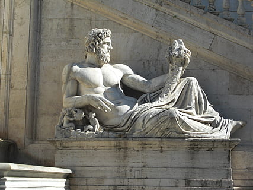

Mitología Romana
La mitología griega está llena de historias fascinantes sobre dioses y héroes. Algunos de los dioses más conocidos son Zeus, Atenea, y Apolo.
Por ejemplo, Zeus es el dios del cielo y el rey de los dioses, conocido por su poder y su influencia sobre el mundo mortal.
Mitología Griega: Introducción La mitología griega es una de las más influyentes de la historia, con relatos que explican el origen del mundo, la vida y la naturaleza humana. Basada en un vasto panteón de dioses olímpicos liderados por Zeus, estas historias fueron plasmadas en obras como la Ilíada y la Odisea. Los griegos creían en la intervención de los dioses en los asuntos humanos y en la existencia de criaturas legendarias, héroes épicos y relatos que dieron forma a su cosmovisión.